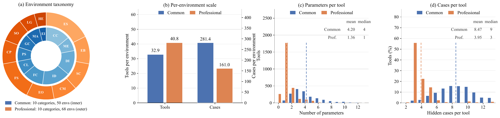

Benchmark
Existing benchmarks tie correctness to APIs, unit tests, or patches over existing code. CodeWorldBench asks how faithfully an agent-built environment reproduces the state dynamics its specification prescribes.
Function-level benchmarks target localized synthesis under static tests. Repository-level and software-engineering benchmarks extend that to completion, repair, and repository construction, but tie correctness to APIs, unit tests, or patches over existing code. Tool-use benchmarks evaluate agents inside already-specified environments, testing whether they call tools correctly rather than whether they can build the state dynamics beneath those tools. Two columns stay empty across the board.
| Benchmark | Scale | Repo-level | Generation | Repair | Persistent state | World construction |
|---|---|---|---|---|---|---|
| HumanEval | 164 problems | ✗ | ✓ | ✗ | ✗ | ✗ |
| MBPP | 974 problems | ✗ | ✓ | ✗ | ✗ | ✗ |
| RepoBench | 1,669 repositories | ✓ | ✓ | ✗ | ✗ | ✗ |
| SWE-bench Verified | 500 issues | ✓ | ✗ | ✓ | ✗ | ✗ |
| Commit0 | 54 libraries | ✓ | ✓ | ✗ | ✗ | ✗ |
| MLE-bench | 75 competitions | ✓ | ✓ | ✗ | ✗ | ✗ |
| NL2Repo-Bench | 104 repositories | ✓ | ✓ | ✗ | ✗ | ✗ |
| Terminal-Bench | 89 tasks | ✓ | ✗ | ✗ | ✗ | ✗ |
| ProgramBench | 200 programs | ✓ | ✓ | ✗ | ✗ | ✗ |
| RepoZero | 100 repositories | ✓ | ✓ | ✗ | ✗ | ✗ |
| DeepSWE | 113 tasks | ✓ | ✓ | ✓ | ✗ | ✗ |
| FrontierSWE | 34 tasks | ✓ | ✓ | ✓ | ✗ | ✗ |
| CodeWorldBench | 118 environments × 2 settings | ✓ | ✓ | ✓ | ✓ | ✓ |
Ordered by release date. Persistent state means hidden checks on the state actions induce. World construction means implementing an executable environment another agent can call.
A code world is W = (D, S, T, V): seed database, runtime state space, tool set, and
hidden verification rules. Tools split into read-only query tools and state-mutating tools. Each
setting exposes a tool subset and hidden cases of the form (tool, arguments).
Reference and submission both initialize from s₀ = Init(D), then receive
identical hidden tool calls. Nothing about the comparison depends on how the code is
written.
A case passes only if the returned value matches and, for mutating tools, the
resulting state matches the reference on every field designated by V.
Between 2.2% and 3.0% of state checks require a field to be absent — a condition no return-value check can express. That is how a case catches a tool which writes a record it should have rejected.
The checks are not a thin layer over the return value. 5,914 of the 14,069 common cases carry state assertions, and on professional the balance reverses — 8,105 of 10,946. A common case that checks state names 2.77 paths on average and a professional one 8.11, the deepest naming 76 and 190. Counting tools rather than cases, 69.1% of common tools and 77.1% of professional ones carry at least one documented state effect, so most of each surface cannot be verified from return values alone.
Each environment yields both settings from the same base. They are reported side by side, never averaged.
The agent implements the code world from scratch in a workspace containing initial data and tool documentation, with contracts specifying entities, tool surfaces, and behavior. Hidden tests execute against reset seed states across three nested slices: L1 (easiest 25%), L2 (easiest 50%), and L3 (the full surface, reported everywhere on this site). On the common pool that works out to 7.8, 16.3, and 32.9 tools per environment, so each slice roughly doubles the verified surface.
Semantic repair on runnable but defective repositories generated by Qwen3.6-27B under OpenHands, where the defects arose during generation rather than being injected. Tool surfaces and seed states are preserved, and verification artifacts withheld to prevent leakage. Fail-to-pass and pass-to-pass rates are reported separately, decoupling bug fixes from regression avoidance.
GPT-5.5 builds the reference worlds under human-authored contracts with execution-based admission. A world enters the benchmark only after every tool passes its checks.
Candidate stateful domains are organized into common and professional taxonomies, retaining environments that require coordination across records or tools with output–state verification, and filtering out static lookups and single-function tasks.
Each category is governed by a contract covering overview, entity set, data scale, state schema, tool suite, tier assignment, validation rules, examples, and seed specification. For every tool the contract details arguments, validation order, error conditions, mutations, and cross-entity side effects.
The generator enforces foreign-key, temporal, and status relationships, so the seed state supports queries, pagination, conflicts, and state transitions across both success and failure branches.
Shared state management, tool implementations, executable tests, and behavioral notes are generated together so validation logic, error branches, and event mutations agree. Environments register all tools as an MCP server and bundle verification suites for state and events.
Query tools are audited for filtering, pagination, and invalid inputs; stateful tools for preconditions, idempotency, conflicts, and side effects. Two rounds of post-generation validation repair implementations and test cases. Ambiguous or weakly covered worlds are repaired or discarded.
118 environments with 4,417 tools — 32.9 per common environment and 40.8 per professional one — and 25,015 hidden cases (14,069 common, 10,946 professional), which SWE splits into 9,753 pass-to-pass and 15,262 fail-to-pass. State representations span static tables, complex configurations, and event-driven databases.
The two pools load the same axes differently. A common environment documents 69.9 distinct error identifiers across its 32.9 tools, 5.0 per tool; a professional one documents 10.3, 2.4 per tool, but spends far more words per tool contract — 542 against 200. Common environments demand many precise rejection paths, professional ones long single-tool specifications. Professional environments also start from small seed tables (mean 74 records against 10,068 on common), so 24.9% of their cases declare setup calls to reach states the seed database does not contain, against 2.2% on common.

Twenty domains, ten per subset. These codes are the category column headers in the result tables.
| Category | Scenarios |
|---|---|
| Communication Collaboration | Email · Instant Messaging · Message Bus · Social Media Operations · Advertising Management · Knowledge Base · Slides Generation |
| Media Entertainment | Video Platform · Public Relations · Ticketing Management · Game Operations |
| Data Intelligence | Relational Database · NoSQL Database · Environmental Monitoring · Document Processing · Paper Management · Business Registration · Hospital Directory |
| Infrastructure Development | Web Search · Cloud Resource Management · Log Monitoring · Configuration Center · Desktop Simulation · IoT Simulation · Project Management · API Documentation |
| Financial Compliance | E-commerce · Banking Operations · Contract Management · Intellectual Property · Cryptocurrency Management · NFT Marketplace |
| Commerce Logistics | Logistics Delivery · Supply Chain · Google Sheets (×2) |
| Public Service | Vehicle Administration · Ecological Protection · Airline Customer Service · Healthcare Support |
| Geospatial Construction | Shared Mobility · Traffic Monitoring · Lease Management · Construction Project |
| Manufacturing Agriculture | Manufacturing Execution · Industrial Control · Smart Agriculture · Veterinary Practice |
| Embodied Intelligence | Embodied Intelligence (×2) |
Environment IDs are omitted from both pools.
The professional pool models real software products, which is where its larger tool surfaces and longer per-tool contracts come from.
| Category | Environments |
|---|---|
| Engineering Systems | AutoCAD · Siemens NX · Abaqus · TIA Portal · CATIA V6 · SimScale · 3DEXPERIENCE Platform · Autodesk CFD · SOLIDWORKS · Studio 5000 Logix Designer · FactoryTalk View SE · Archicad |
| Embedded Systems | dSPACE ConfigurationDesk · Altium Designer · Synopsys IC Compiler II · Ansys SCADE Suite · dSPACE ControlDesk · Vector CANoe · Cadence Virtuoso |
| Scientific Computing | TopSpin · Xcalibur · CLC Genomics Workbench · CP2K + AiiDAlab · MassHunter · BIOVIA Materials Studio · Gaussian + GaussView |
| Creative Media | Adobe Premiere Pro · Google Ad Manager (publisher side) · Adobe Experience Cloud · Foundry Nuke · Innovid · The Trade Desk |
| Enterprise Operations | Oracle E-Business Suite · Workday HCM · IFS Cloud · Cornerstone OnDemand · Oracle JD Edwards EnterpriseOne · Oracle Fusion Cloud HCM · SAP SuccessFactors Employee Central |
| Financial Services | FactSet Workstation · Duck Creek Policy · Bloomberg Terminal · Encompass · BlackRock Aladdin · Murex MX.3 · Guidewire ClaimCenter · Advent Geneva · Charles River IMS · Guidewire PolicyCenter |
| Commercial Platforms | RealPage OneSite · Manhattan Associates Active Omni · Stellar MLS · AppFolio Property Manager · Blue Yonder Luminate Commerce · Datasite Diligence |
| Supply Operations | Blue Yonder Warehouse Management · BestRx · Manhattan Active Warehouse Management · CargoWise One · Blue Yonder Transportation Management · PioneerRx |
| Legal Governance | Aderant Elite 3E · NetDocuments · ProLaw · Tyler EnerGov |
| Health Education | Centricity PACS · IntelliSpace PACS · Oracle Clinical One Data Collection |